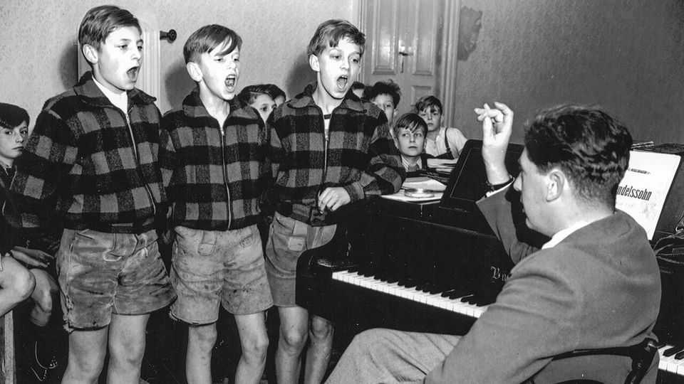

Why singing is note-worthy, even if you’re bad at it
A new book argues that more people should try to carry a tune

Oct 1st 2026
SINGING has provided a soundtrack to human history. Songs tell people about their past and their values. Ancient epics, which placed societies in mythic time, were sung or chanted. “I sing of arms and the man,” begins Virgil’s “Aeneid”—not “I speak.” Singing has long been a way to bind ideological communities, from the hymn-singing early Protestants to pro-democracy demonstrators in Belarus.
It can help people at all stages of life. Singing seems to hold babies’ attention, and prevent them from crying, longer than speech. A study published in the British Journal of Psychiatry found that singing groups were better than playgroups at alleviating severe postnatal depression. The act of singing can help rehabilitate people who have suffered horrendous injuries, including Gabrielle Giffords, an American congresswoman who was shot in the head in 2011. (Music therapy helped her recover verbal fluency.)
Many people derive pleasure from singing in choirs and other groups. Some 1.5m Germans belong to choirs that are affiliated with the main singing associations; millions more sing in casual groups. In “Sing” Sacha Langton-Gilks, a teacher who trained as a choral scholar, argues that almost everyone can, and should, sing. But that raises a question.
If singing is so enjoyable and beneficial, why doesn’t everyone do it more? One answer is that it is extremely difficult to sing well. Good technique must be learned; bad habits must be unlearned. Ms Langton-Gilks was informed by one fierce-sounding teacher that her voice had been “strangled” by years of singing in a college choir. Many things can set a singer back: germs, nodules, the hormone progesterone (which dries the vocal cords)—and, above all, ageing.
Social difficulties abound too. Ms Langton-Gilks defends the practice of auditioning children for school singing groups, but many children (and adults) fear the exposure and judgment that it entails. A request to sing solo in front of others can be no less terrifying than a request to take off your clothes. It might not help that wonderful singers can be summoned by a few taps on a phone screen. Next to someone like Adele or Caroline Polachek, hardly anybody sounds good.
“Sing” insists that group singing is gratifying regardless of talent, and that it brings people together. True, but it can also be infuriating and disheartening. Your correspondent has sung in choirs where people ostentatiously turn away or cover an ear to muffle the wrong notes being sung by a neighbour. One study of an amateur choir found that the common practice of bringing in professional singers shortly before performances, to “stiffen” the sound, greatly offended the amateurs. The professionals did not enjoy it, either.
If singing is, or ought to be, an essential part of life, it is not a surprise that life intrudes on singing. The strains and irritations of ordinary existence can wreck people’s voices—Ms Langton-Gilks writes that this temporarily happened to her—and throw singing groups into disharmony. A better book, with fewer digressions, would have more to say about the bum notes. ■